Manuscript under review, 2026
Autonomous interior survey of a lava tube for planetary habitat assessment
- 1Robotics and Artificial Intelligence Group, Luleå University of Technology, Sweden
- 2Department of Earth Sciences, Durham University, United Kingdom
- 3Natural Science Institute of Iceland, Garðabær, Iceland
- *Correspondence: akapat@ltu.se
Raufarhólshellir, Iceland. Autonomous flights April 2025; surface survey 28 August 2025; tape check at the rims 15 September 2026.
Summary
Lava tubes are caves left behind when the molten interior of a lava flow drains out. On the Moon and Mars they are targets for exploration because rock cover attenuates cosmic radiation, subsurface temperatures vary less than those at the surface, and caves can preserve geological and possibly biological records. Orbital observations have identified many candidate entrances, but a skylight identifies an access point and shows nothing of the cavity beyond it, the thickness of material above it, or whether the route through the interior is intact. Direct investigation will therefore require robotic systems that can survey an unknown subsurface environment without external positioning, reliable communication or a prior map.
We tested that complete workflow in Raufarhólshellir, a 1,360 m basaltic lava tube in southwest Iceland. Following a single start command, an aerial robot explored and mapped approximately 300 m of the closed section using onboard lidar-inertial state estimation, mapping, planning and supervision, with no external positioning and no pilot input. Two independent flights reproduced the interior geometry to 0.4 m root mean square. Three natural skylights, visible in both the interior lidar and an independently acquired photogrammetric model of the surface, were then used to register the interior reconstruction to the ground above, without markers or surveyed control inside the cave.
The registered model gives the cavity dimensions and the overburden, the vertical distance between the mapped ceiling and the ground surface, at every metre along the tube: close to zero at the collapses, 12 to 14 m over the final 50 m, 6.0 m in the median. These are the quantities that shielding and roof-stability assessments require, and we carry them through to areal shielding mass and to the rock strength that each standing span demands. Repeating the analysis with the surface model degraded to the quality of orbital stereo topography shows that the workflow holds at HiRISE-like and LROC-like resolution and is not reliable at CTX-like resolution.
The flights took place in April 2025. The surface model is an eBee X RTK photogrammetric survey that Birgir V. Óskarsson of the Natural Science Institute of Iceland flew on 28 August 2025. In September 2026 he went back and measured the roof at the skylight rims with a tape; the section Checked on site compares his numbers with ours.
Supplementary video
The flight from launch to the deepest station, with the map growing onboard and the planner choosing where to look next. The file will be added when the cut is final.
Figures
Click a figure to open it at full size. The legends are those of the manuscript.
{kind=link}
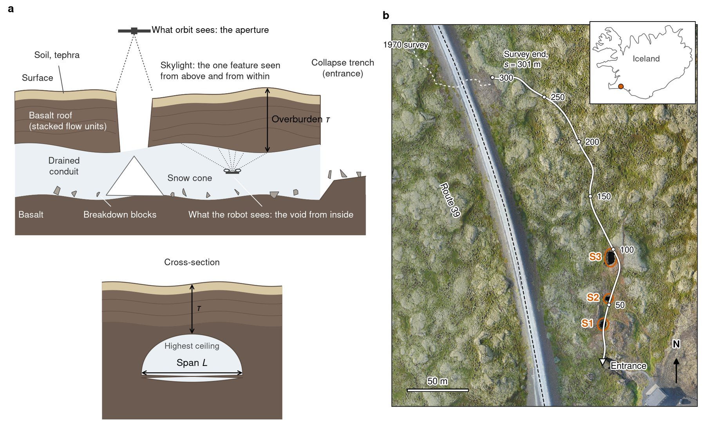
a, Schematic long section through a lava tube that illustrates the observational problem: surface observations can identify skylights and other openings, but do not reveal the geometry of the cavity beyond them or the thickness of the material above it. b, Location and plan view of Raufarhólshellir, southwest Iceland, showing the surveyed section, the entrance and the three skylights on the August 2025 orthomosaic; the dashed line continues the tube along the 1970 map sheet beyond the surveyed reach, and the tube extends for approximately 1,360 m. c, The aerial robot (dashed box) in flight in a chamber beneath a skylight, where wind-blown snow forms a cone on the floor. d, Two views of the closed section, a dark constriction and a breakdown chamber, showing the range of conduit geometries encountered during autonomous exploration.
{kind=link}
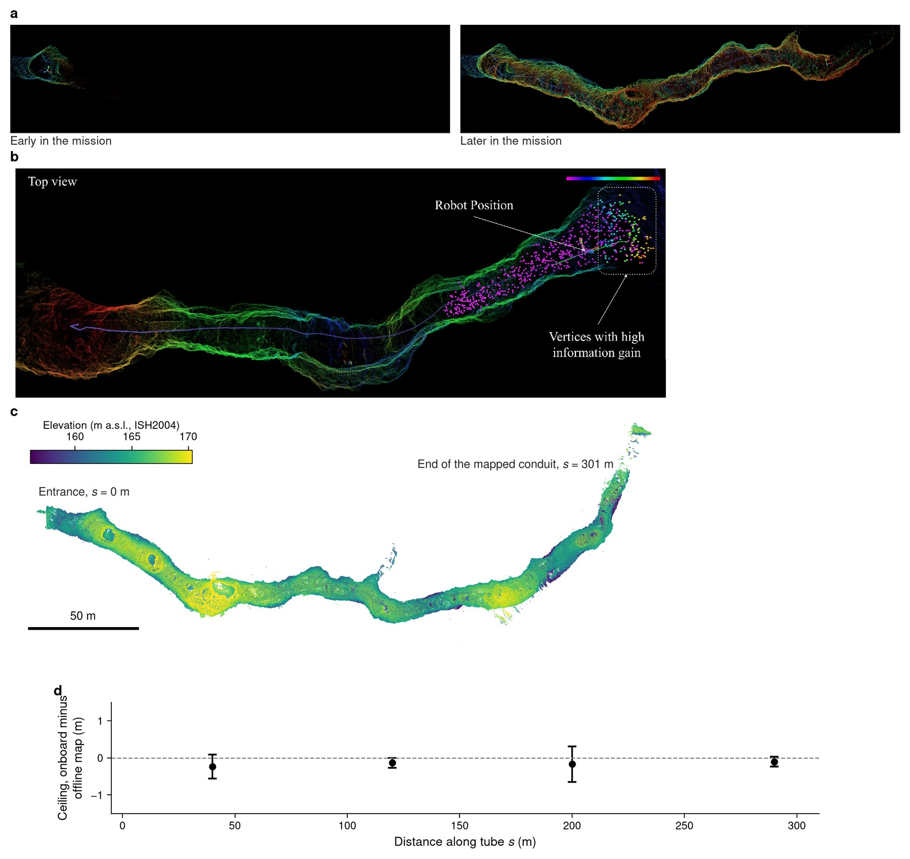
a, The onboard lidar map early and later in the principal autonomous mission, in the same frame, with the flown trajectory drawn through the reconstructed conduit. b, Autonomous exploration within the partially mapped environment: the executed trajectory (purple), candidate viewpoints sampled in verified free space (magenta) and the subset with the highest expected gain (boxed). c, Plan view of the final reconstruction of the principal mission, coloured by elevation; the robot flew 298 m and reached 235 m from the launch point, and lidar observations extend the mapped conduit to 301 m. d, Difference in mapped ceiling elevation between the onboard map and the higher-resolution offline reconstruction of the same flight, as mean and standard deviation over successive 80 m sections of the conduit.
{kind=link}
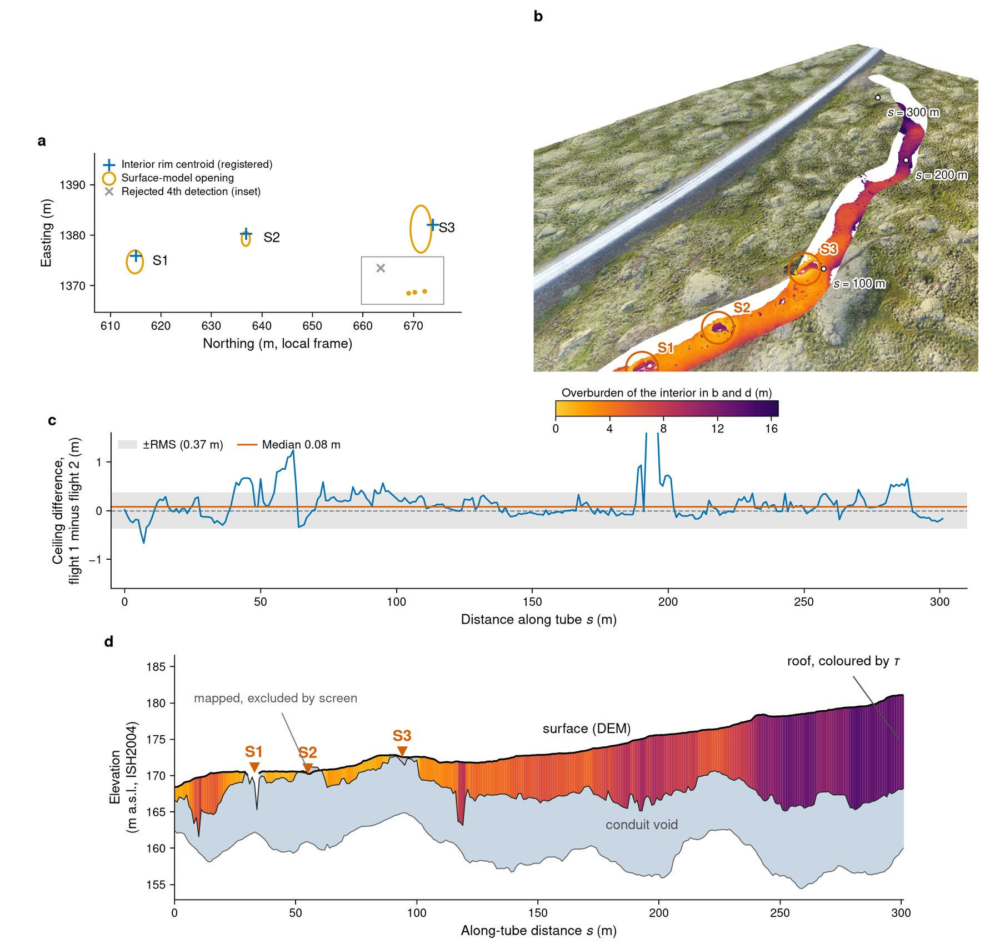
a, Plan view of the three skylights as detected in the surface photogrammetric model (orange ellipses) and the interior rim centroids after registration (blue crosses); the inset shows a fourth candidate detection that the matching rule rejected. b, Oblique view of the registered surface and interior datasets, with the interior coloured by overburden, the three skylights ringed and along-tube stations marked at 100, 200 and 300 m. c, Independent repeatability test: the difference in mapped ceiling elevation between the two long autonomous flights at each one-metre station, after each interior reconstruction was registered independently to the surface; the line marks the median and the band the root mean square. d, Long section along the centreline of the registered model: the ground surface, the conduit void and the roof coloured by overburden, with the three skylights marked.
{kind=link}
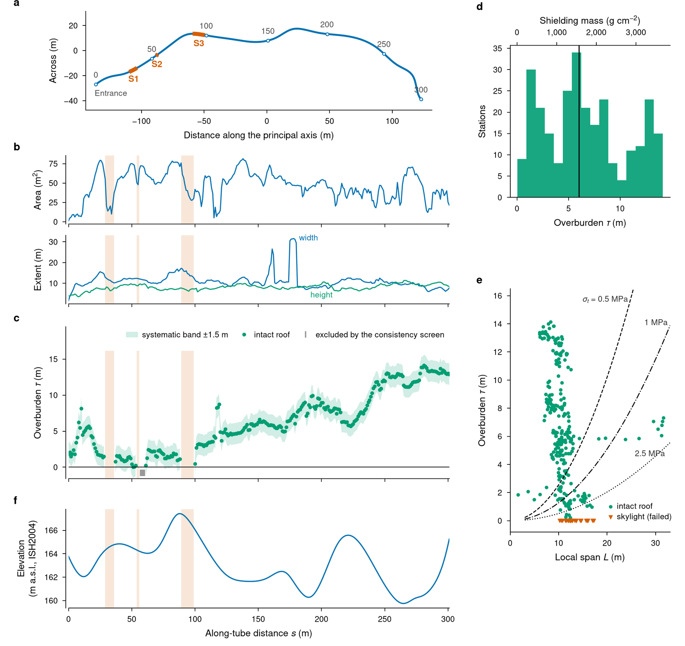
a, Plan view of the extracted cavity centreline, with one-metre measurement stations and the entrance and three skylights marked. b, Cross-sectional area, width and height along the surveyed reach. c, Overburden, defined as the vertical distance between the mapped ceiling and the independently surveyed ground surface. The shaded band shows the ±1.5 m systematic registration uncertainty; stations excluded by the geometric consistency screen are indicated separately. d, Distribution of overburden for the 276 retained stations, with the corresponding areal shielding mass calculated for a bulk density of 2,600 kg m-3. e, Overburden against local cavity span for intact sections and skylight collapses. Curves show the thickness required by the clamped-strip model for rock-mass tensile strengths of 0.5, 1 and 2.5 MPa.
{kind=link}
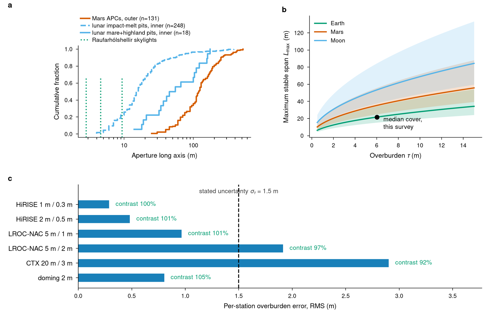
a, Cumulative distributions of aperture long axis by feature type: the 131 dimensioned Martian atypical pit craters (outer outline) and the dimensioned lunar pits by inner aperture, separated into 248 impact-melt pits and 18 mare and highland pits; the three Raufarhólshellir skylights are dotted. b, Maximum stable span under the clamped-strip model, Lmax = √(σt τ / (β ρ g)), at ρ = 2,600 kg m-3 on Earth, Mars and the Moon, for a rock-mass tensile strength of 1 MPa (lines) and 0.5 to 2.5 MPa (bands); the dot marks the median cover of this survey on the Earth curve. c, The orbital transfer test: per-station error of the overburden recomputed with the surface degraded to the posting and vertical noise of planetary stereo terrain models, with the interior map and registration held fixed; the dashed line is the profile's own uncertainty and the green figures give the fraction of the thick-thin contrast retained (means over 20 noise realisations; the doming case is a single deterministic warp).
Extended Data 8 figures and 2 tables
{kind=link}
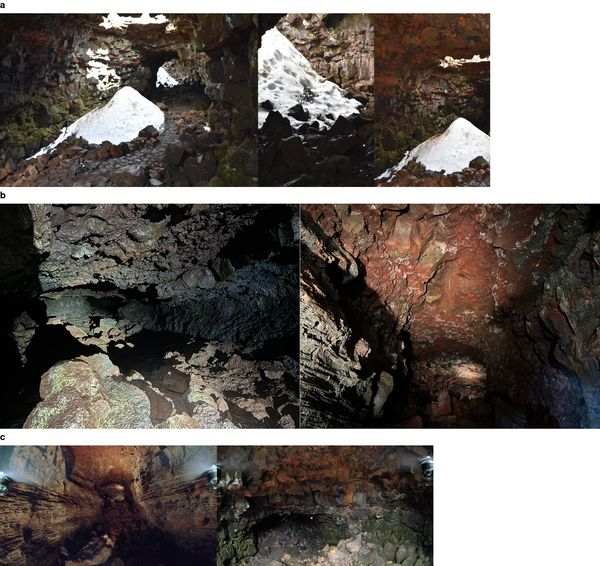
{kind=link}
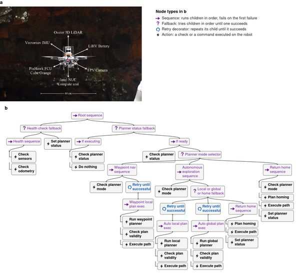
{kind=link}
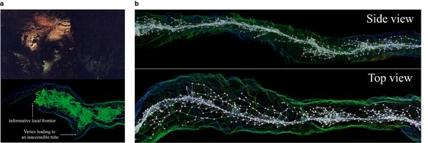
{kind=link}
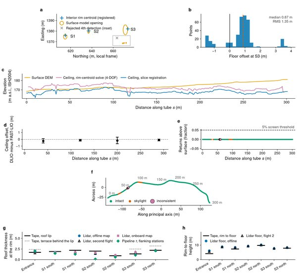
{kind=link}
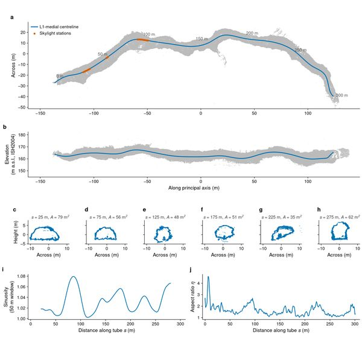
{kind=link}
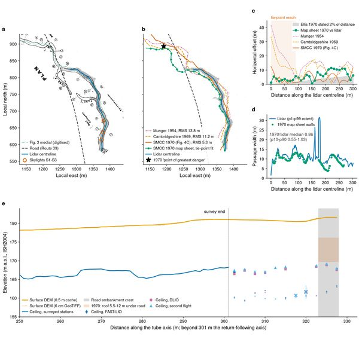
{kind=link}
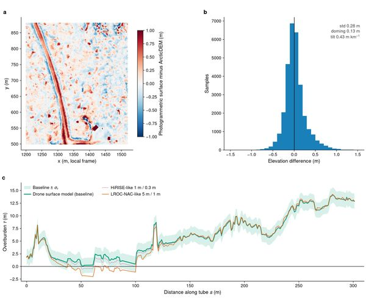
{kind=link}
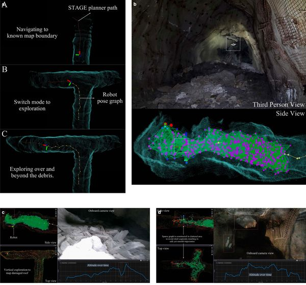
{kind=link}
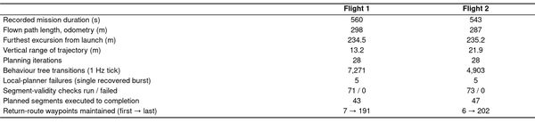
{kind=link}
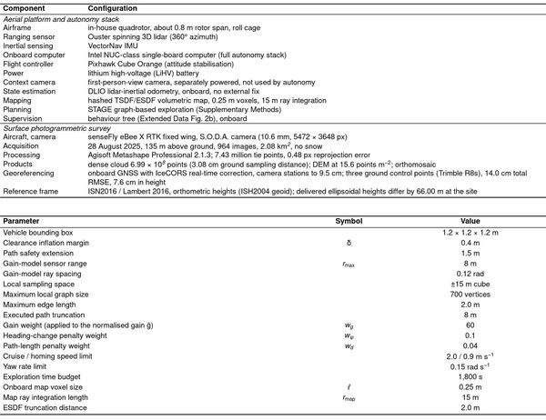
Checked on site
On 15 September 2026, after the analysis was finished, Birgir Óskarsson went back to the tube with a tape. None of his numbers entered the analysis; they are the check.
At the north and south rim of the entrance and of each skylight he hung the tape from the ground surface to the underside of the roof lip, and at four of the openings from the rim down to the floor. The registered model gives the same quantities: the surface elevation minus the highest lidar returns just outside each rim, and minus the lowest returns beneath it. Over the seven rim points the lidar roof thickness differs from the tape by 0.1 m on average and by 0.33 m root mean square. The largest difference is 0.6 m. Between themselves, the three interior maps (the two flights and the onboard map) agree to about 0.1 m. The rim-to-floor heights agree to 0.4 m at S2 and S3 and to 1.1 m at S1. At the entrance the lidar floor lies 2 m below the tape value; what the tape was measured to there is being confirmed. His point coordinates, digitised on his own orthomosaic, fall on the surface model at our reprojection to 3 cm, which confirms the horizontal frame as well.
The paper quotes a systematic uncertainty of 1.5 m on the whole profile, set by the registration datum. The rim check bounds the datum error along the skylight reach at about 0.6 m. We keep the larger value because the check does not reach the deep interior, where the cover is thickest. He also counted the flow units on the west wall of each skylight, three, five and four, with the thickest units 1.4 to 2.8 m, and collected two rock samples. Their bulk density, once measured, replaces the 2,600 kg per cubic metre the shielding numbers assume.
{kind=link}
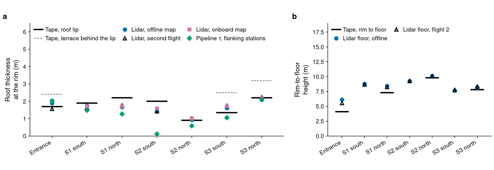
a, Roof thickness at the rim: the tape value (black bar; dotted grey, the thicker terrace behind the lip where one exists) against the registered lidar for the offline map, the second flight and the onboard map, and the pipeline overburden at the three nearest intact stations. b, Height from the rim to the floor by tape and from the lidar floor of the two flights. The same panels appear as Extended Data Fig. 4f, g.
| Rim point | Tape, lip (m) | Tape, terrace (m) | Lidar, offline (m) | Lidar, flight 2 (m) | Lidar, onboard (m) | Pipeline, flanking stations (m) | Rim to floor, tape (m) | Rim to floor, lidar (m) |
|---|---|---|---|---|---|---|---|---|
| Entrance | 1.70 | 2.40 | 1.9 | 1.6 | 2.0 | 2.0 | 4.10 | 6.1 |
| S1 south | 1.90 | 1.8 | 1.6 | 1.7 | 1.5 | 8.8 | ||
| S1 north | 2.20 | 1.7 | 1.8 | 1.7 | 1.3 | 7.30 | 8.4 | |
| S2 south | 2.00 | 1.4 | 1.4 | 1.6 | 0.1 | 9.3 | ||
| S2 north | 0.90 | 0.9 | 1.0 | 1.0 | 0.6 | 9.80 | 10.1 | |
| S3 south | 1.35 | 2.50 | 1.6 | 1.8 | 1.7 | 1.0 | 7.7 | |
| S3 north | 2.20 | 3.20 | 2.1 | 2.2 | 2.2 | 2.1 | 7.80 | 8.2 |
Lip: the uppermost roof terrace, surface to underside. Terrace: the thicker terrace behind the lip, read by eye. Lidar: surface elevation minus the highest interior returns in a strip 0.5 to 3.5 m outward from the rim point. Flanking stations: the paper's overburden at the three nearest retained stations. Rim to floor, lidar: surface minus the lowest returns within 3 m of the point, offline map, April 2025. Flow units on the west walls: S1 three (lowest 2.83 m), S2 five (lowest about 1.4 m), S3 four (middle two 1.8 and 2.0 m). Comparison script and files: skylight_groundtruth.py, field CSV and notes, results JSON.
Data and code
The analysis code produces every figure and every number in the paper from the files below. All files are on the data-v1 release of this site's repository, with a README on coordinate frames and licences and SHA-256 checksums. The same files are archived at Zenodo, doi:10.5281/zenodo.22710161. Data licence CC BY 4.0.
| Dataset | Description | Format | Files |
|---|---|---|---|
| Registered interior maps | Lidar reconstruction of the closed section in the surface frame (ISN2016 / ISH2004 orthometric): first long flight, offline (the paper's primary map) at 10 cm and 30 cm; second long flight, the independent repeat; onboard map of the first flight. | PCD | flight 1, 10 cm (90 MB) · 30 cm (9 MB) · flight 2, 10 cm (79 MB) · 30 cm (8 MB) · onboard, 10 cm (39 MB) · 30 cm (4 MB) |
| Full-resolution clouds | Full-resolution reconstruction of the first long flight (odometry frame) and the merged surface and subsurface cloud (registered frame, ellipsoidal heights). Split into 1900 MB parts; restore with cat name.pcd.*.part > name.pcd. |
PCD (split) | flight 1 part 00 (2.0 GB) · part 01 (0.5 GB) · merged part 00 (2.0 GB) · part 01 (1.0 GB) |
| Surface model | Photogrammetric dense cloud of 28 August 2025 (Natural Science Institute of Iceland, surveyor B. V. Óskarsson) cropped to the site, the ground surface at 10 cm, the gridded DEM used for the overburden, and the ArcticDEM and IslandsDEM crops used for validation. | PCD, GeoTIFF | dense cloud (410 MB) · 10 cm (351 MB) · ground surface (228 MB) · DEM (535 MB) · ArcticDEM crop (3 MB) · IslandsDEM crop |
| Derived products and every reported number | paper_numbers.json, the centreline at 1 m, the 302 cross-section stations with area, width, height and aspect ratio, the overburden profile with its consistency flags and uncertainty band, registration and validation reports, the orbital transfer test, the 1970 survey comparison, the road crossing and the planetary catalogue. | CSV, JSON | analysis_outputs_v9.zip (7 MB) |
| Registration transforms and mission statistics | The four-degree-of-freedom baseline registration, the slice-based registration transforms, mission statistics computed from the onboard logs and the planner parameters as flown. | JSON, CSV | analysis_outputs_baseline_and_ed.zip (15 MB) |
| Ground truth at the rims | The tape measurements of 15 September 2026 at seven rim points (field CSV and notes, B. V. Óskarsson), the script that compares them with the registered model, and its outputs per point. | CSV, JSON, Python | field CSV and notes · comparison (JSON) · script |
| Figures | The five main figures and ten Extended Data items as PDF and PNG, as the code generates them. Extended Data Fig. 4 (registration validation) gained the rim panels on 17 September 2026; the current file is in the analysis repository. | PDF, PNG | figures_nature_v10.zip (68 MB) |
| Analysis code | Python pipeline that runs the registration, morphometry, overburden computation, statistics and orbital transfer test and generates every figure and number in the paper (Apache 2.0). | Python (git) | github.com/aakapatel/lava-pcd · snapshot (251 MB) |
| Raw lidar and IMU logs | Onboard recordings of the autonomous flights (lidar scans, IMU, odometry, planner and behaviour-tree topics), about 450 GB. Available on request because of their size. | MCAP | Request by email |
Related publications
The two papers that describe the planner the robot flew, and its extension to a ground and aerial pair.
- STAGE: Scalable and Traversability-Aware Graph based Exploration Planner for Dynamically Varying Environments DOI 10.1109/ICRA57147.2024.10610939 arXiv:2402.02566
- A Hierarchical Graph-Based Terrain-Aware Autonomous Navigation Approach for Complementary Multimodal Ground-Aerial Exploration DOI 10.1109/ICRA55743.2025.11128079 arXiv:2505.14859
Cite
The entry below stands in until the paper is published; the final reference and DOI replace it then.
@unpublished{patel2026lavatube,
author = {Patel, Akash and Stathoulopoulos, Nikolaos and Llewellin, Edward W. and {\'O}skarsson, Birgir V. and Nikolakopoulos, George},
title = {Autonomous interior survey of a lava tube for planetary habitat assessment},
note = {Manuscript under review},
year = {2026}
}
Team and contact
Questions about the data, the code or the field campaign go to the corresponding author.